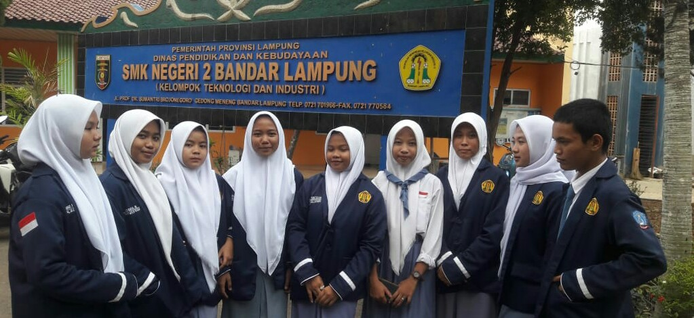
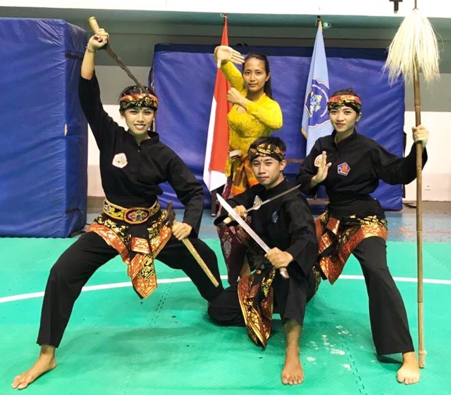
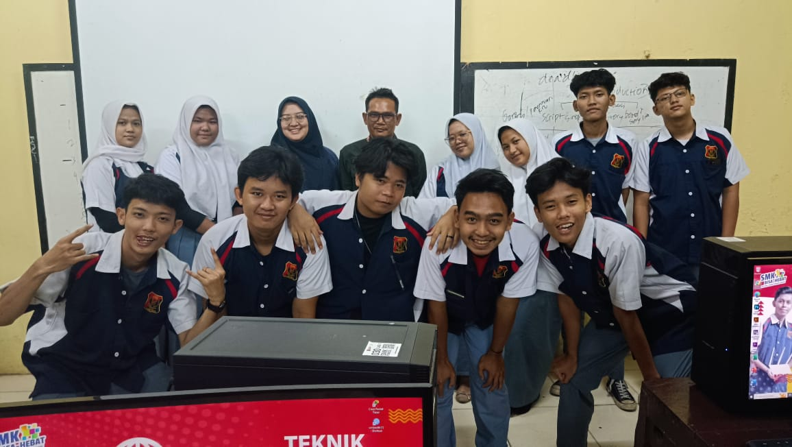
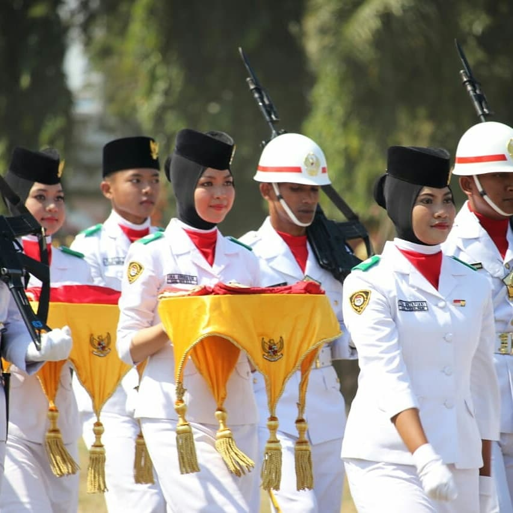
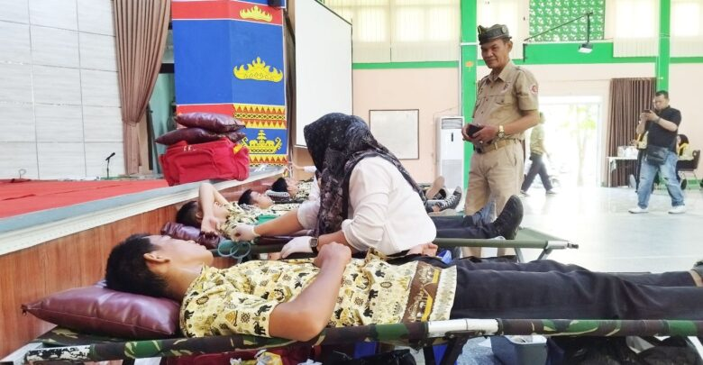
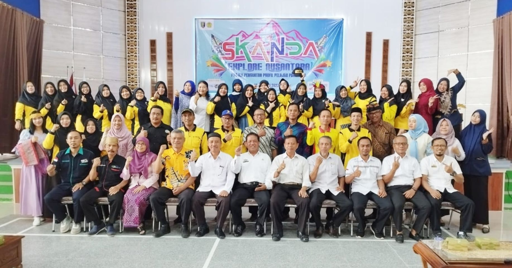

Deskripsi Sekolah
SMKN 2 Bandar Lampung adalah SMK negeri di Kota Bandar Lampung yang beralamat di Jalan Prof. Sumantri Brojonegoro, Rajabasa. Sekolah ini memiliki 12 program keahlian, termasuk Teknik Pemesinan, TKRO, TKJ, serta RPL.
Visi & Misi
Visi: Menjadi Sekolah Vokasi yang berprofil Pelajar Pancasila dan Berjiwa Wirausaha.
Misi: Penyusunan perencanaan berbasis data pada tingkat satuan pendidikan, meningkatkan integritas, kualitas dan kuantitas pendidik dan tenaga pendidik, menyelenggarakan pembelajaran yang humanis, professional, sesuai dengan nilai pembelajaran pradigma baru, menyiapkan sarana prasarana yang memenuhi standar Pendidikan dan industri, menjadikan manajemen sekolah berbasis Badan Layanan Umum Daerah (BLUD). menghasilkan lulusan yang dapat berwirausaha, melanjutkan Pendidikan jenjeng yang lebih tinggi, atau bekerja mengisi lapangan kerja di DUDIKA.
Sejarah
sejarah berdirinya SMK Negeri 2 Bandar Lampung diawali berdirinya yayasan 2 Mei pada tahun 1962/1963. Tahun 1962 – 1968 status sekolah ini masih swasta dengan menggunakan kurikulum tahun 1964. Dengan keputusan Direktorat Jendral Pendidikan Dasar dan Menengah, Departemen Pendidikan dan Kebudayaan tanggal 25 juli 1968 didirikanlah STM Negeri Tanjung Karang dengan membuka Jurusan Bangunan Air dan Bangunan Gedung. Pelaksanaan kurikulum 1977 sesuai dengan keputusan Direktorat Jendral Pendidikan Dasar dan Menengah tanggal 1 Februari 1977, No. 1.3:08.Kep.1977, menggunakan kurikulum 1976. Dengan demikian, STM Negeri Tanjung Karang memiliki tiga jurusan, yaitu Mesin, Listrik dan Bangunan. Pada perkembangan selanjutnya dengan bertambahnya fasilitas dan minat yang ada pada STM Negeri Tanjung Karang, maka dibuka dua jurusan baru yaitu jurusan Elektronika dan Otomotif. Dengan demikian, jurusan yang ada di STM Negeri Tanjung Karang menjadi 5 jurusan. Mengikuti perubahan sistem pendidikan yang berlaku di Pendidikan Dasar dan Menengah, maka dengan adanya surat keputusan Menteri Pendidikan dan kebudayaan RI tanggal 7 Maret 1997 No. 034.035 dan 036/0 /1997 tentang perubahan Nomor Klatur Sekolah Menengah Kejuruan Atas menjadi Sekolah Menengah Kejuruan dan Tata Kerja Sekolah Menengah Kejuruan. Perubahan ini mulai berlaku pada tanggal 29 Mei 1997 untuk STM ini. Dengan Demikian secara resmi STM Negeri Tanjung Karang berubah menjadi Sekolah Menengah Kejuruan Negeri 2 Bandar Lampung. Sekolah Menengah Kejuruan Negeri 2 (Teknologi) Bandar Lampung terletak di Jl. Prof. Dr. Soemantri Brojonegoro. Lokasi cukup strategis karena jauh dari kebisingan dan keramain sehingga benar – benar dapat menunjang pada pencapaian tujuan pendidikan melalui proses belajar – mengajar. Lokasi SMK Negeri 2 Bandar Lampung berbatasan langsung dengan Kampus Universitas Lampung, dimana para mahasiswa melakukan aktivitas kuliah sehingga memotivasi siswa SMK Negeri 2 Bandar Lampung untuk lebih giat dalam belajar dan menimba ilmu sebagai bekal pengetahuan sesuai dengan bakat, minat dan kemampuan yang dimilikinya. Tenaga Pengajar yang ada memiliki potensi yang sesuai dengan Jurusan yang ada pada SMK Negeri 2 Bandar Lampung. Sarana dan Prasaran untuk kelancaran proses belajar mengajar sudah cukup memadai sehingga memberikan kemudahan pada siswa dan guru dalam melaksanakan kegiatan di Sekolah.
Program Unggulan
SMK EXPO
Merupakan kegiatan pameran karya unggulan dari siswa/i SMKN 2 Bandar Lampung.
Olahraga
Mengasah bakat siswa melalui berbagai cabang olahraga berprestasi.
Seni & Sains
Menumbuhkan kreativitas melalui seni dan kompetisi ilmiah.
Galeri Sekolah





